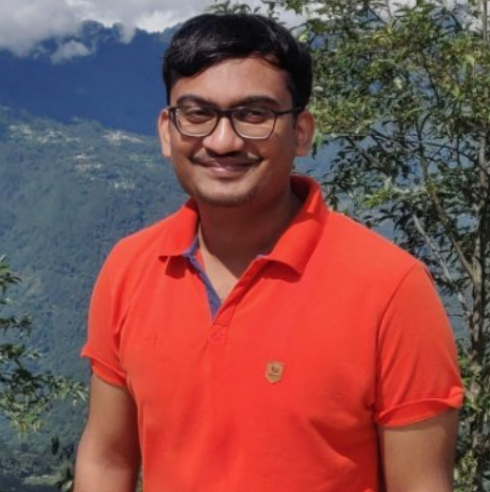
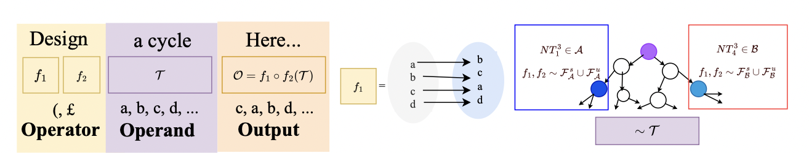
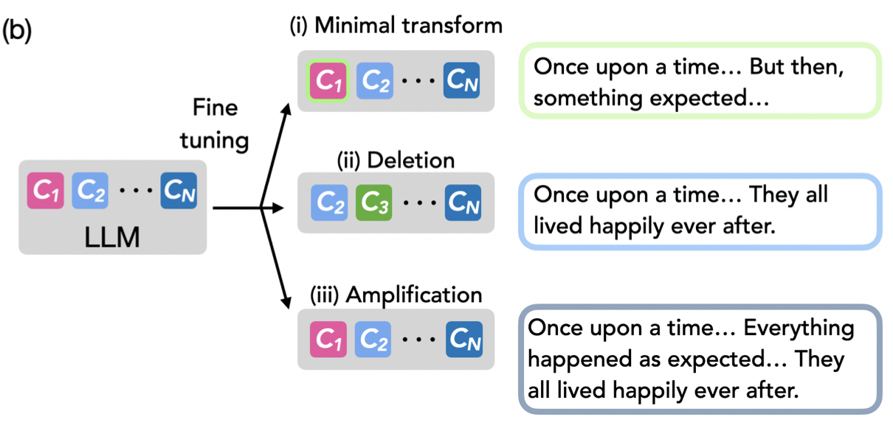

|
Samyak Jain
I am a research fellow at Microsoft Research India, where I am advised by Navin Goyal. Before joining MSR, I did research internships with David Krueger and Puneet Dokania at Cambridge University and Five AI, where my work focussed on developing a better understanding of (safety) fine-tuning using mechanistic interpretability. Even before this, I completed my Bachelors and Masters in CSE at Indian Institute of Technology (BHU) Varanasi and during this time, I worked with Venkatesh Babu and Sravanti Addepalli at Indian Institute of Science, Bangalore. Here, my research foccussed on developing adversarially robust defences.
I am very interested in research areas related to understanding the inductive biases of the learning algorithms, which can help us explain different intriguing observations: phase transitions, neural collapse, simplicity bias, etc. For this I aim to combine tools from learning theory and mechanistic interpretability. I believe in using toy setups to develop hypotheses explaining real world observations and later test these hypoteses at scale. I am always motivated to deliver impactful work enhancing our scientific understanding while being useful in practice.
I am also interested in domains related to AI Safety, like cooperative alignment, adversarial robustness, reward hacking and safety fine-tuning.
Email /
CV /
Google Scholar /
Github
|

|
|
Publications (* denotes equal contribution)
|
|

|
What Makes and Breaks Safety Fine-tuning? A Mechanistic Study
Samyak Jain,
Ekdeep Singh Lubana,
Kemal Oksuz,
Tom Joy,
Philip H.S. Torr,
Amartya Sanyal, and
Puneet K. Dokania
Advances in Neural Information Processing Systems (NeurIPS), 2024
ICML workshop on Mechanistic Interpretability , 2024 (Spotlight)
bibtex / arXiv
We use formal languages as a model system to identify the mechanistic changes induced by safety fine-tuning, and how jailbreaks bypass said mechanisms, verifying our claims on Llama models.
|
|

|
Mechanistically analyzing the effects of fine-tuning on procedurally defined tasks
Samyak Jain*,
Robert Kirk*,
Ekdeep Singh*
Robert P. Dick,
Hidenori Tanaka,
Edward Grefenstette,
Tim Rocktaschel, and
David Krueger
International Conference on Learning Representations (ICLR), 2024
bibtex / arXiv
We show fine-tuning leads to learning of minimal transformations of a pretrained model's capabilities, like a "wrapper", by using procedural tasks defined using Tracr, PCFGs, and TinyStories.
|
|
{kind=link}